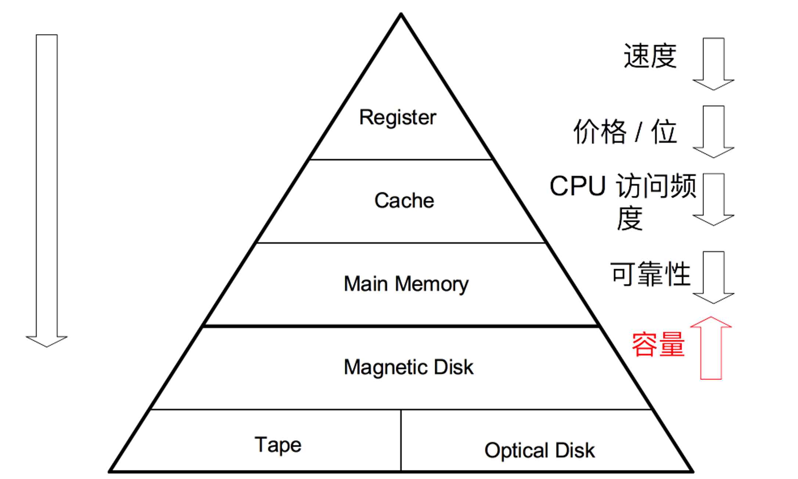
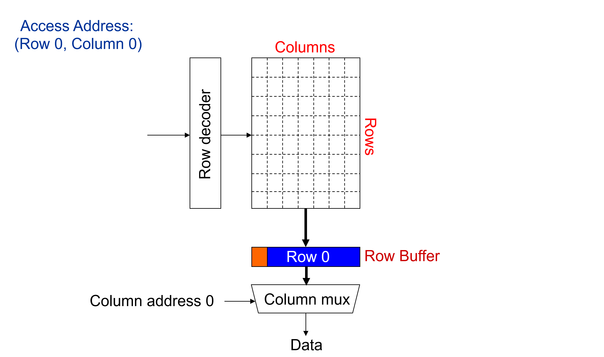
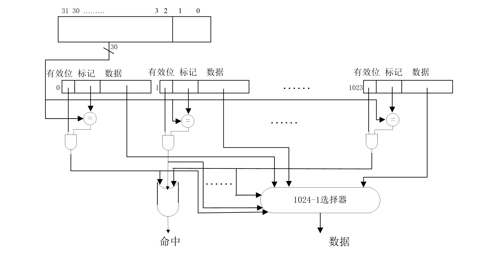
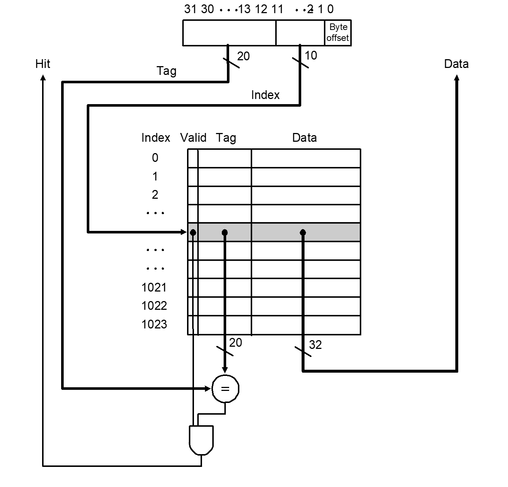
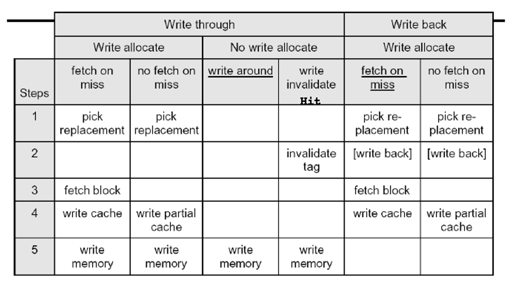

层次存储系统¶
层次存储系统概述¶
存储系统¶
- 随机访问存储器（RAM）：随机， 即访问时间与存放位置无关；半导体存储器。
- 顺序访问存储器（SAM）：按照存储位置依次访问；磁带存储器。
- 直接访问存储器（DAM）：随机 + 顺序；磁盘存储器。
- 关联访问存储器（CAM）：根据内容访问；cache 和 TLB。
层次存储系统¶
基本原则
- 一致性原则：处在不同层次存储器中的同一个信息应保持相同的值。
- 包含性原则：处在内层的信息一定包含在外层中。

DRAM¶
动态存储器，存储原理为 晶体管 + 电容。
工作特点：
- 破坏性读出：电容放电导致，刚读出内容必须立即写回，称为预充电延迟。
- 要定期刷新：电容漏电导致，因此需要：
- 集中刷新：停止读写，所有行逐行刷新。
- 分散刷新：每次完成读写之后刷新这一行。
DRAM 系统的结构：
DIMM（Dual Inline Memory Modules） -> rank -> chip -> bank -> row & col
读取 DRAM 次序如下，因此行列地址需要分两次送（如果缓存命中则不需要送列地址）。

SRAM¶
触发器存储，不需要刷新；非破坏性读出；行列地址同时送。
Cache¶
基本原理¶
程序局部性原理¶
- 时间局部性：最近访问的信息很可能很快还要被访问，因此装载进 cache。
- 空间局部性：最近被访问的信息邻近的信息很可能要被访问，因此装载进 cache。
基本实现¶
主存和 CPU 之间的存储器，SRAM 实现，高速、透明。
cache 通常需要由数据块（data）、标签字段（tag）和有效位（valid）组成，但 命名规范中一般只考虑数据的大小。
主要问题¶
- 地址和 cache 行之间的映射关系：如何根据主存地址得到 cache 中的数据？
- 数据之间的一致性：cache 中的内容是否已经是主存对应地址中的内容？
- 数据交换的粒度：cache 中的内容与主存内容以多大的粒度交换？
- cache 内容装入和替换策略：如何提高 cache 命中率？
参数¶
- 块（line）：数据交换的最小单位。
- 命中（hit）：命中率；命中时间。
- 缺失（miss）：缺失率；缺失损失。
平均访问时间：\text{HR} \times {命中时间} + (1 - \text{HR}) \times {缺失损失}
缓存地址映射¶
全相联¶
所有地址都可以映射到所有位置。
组数为 1，每组中有多路。
PC 被划分为标记位和块内地址：
PC = tag | block offset
例：主存 4GB，cache 4KB 全相联，块大小 4B。
分析过程：
- 主存 4GB => PC 位数 32。
- 块 4B => offset 位数 2。
- tag 位数：30。

特点：
- 主存字块可以和 cache 任意字块对应，利用率高，方式灵活。
- tag 为长，比较电路成本高。
直接映射¶
每个地址只可能映射到一个位置。
若干组，组内只有一路。
PC 被划分为标记位、组索引和块内地址：
PC = tag | set index | block offset
例：主存 4GB，cache 4KB 直接映射，块大小 4B。
分析过程：
- 主存 4GB => PC 位数 32。
- 块 4B => offset 位数 2。
- cache 4KB，块大小 4B => 1024 组，set index 位数 10。
- tag 位数：20。

特点：
- 主存字块只可以和固定的 cache 字块对应，方式直接，利用率低、命中率低、效率较低。
- 标志位较短，比较电路成本低。
多路组相联¶
PC 被划分为标记位、组索引和块内地址：
PC = tag | set index | block offset
特点：
- 前两种方式的折中方案，组内全相联，组间直接映射。
- 集中两种方案的优点，成本合适，效率适中。
写缓存¶
- 写直达（write through）：保证强一致性
- 写分配（write allocate）：写完加载进 cache
- 写不分配（no write allocate）：写完不需要加载进 cache，动机为如果操作系统要写整个数据块，则写完第一个字段就加载是不必要的。
- 拖后些（write back）：若一致性。

cache 缺失¶
必然缺失¶
开机或者进程切换首次访问数据块，【必然发生】。
难以避免，只要程序访问存储器次数够多即可忽略，可通过预取策略应对。
容量缺失¶
活动数据集超过了 cache 的大小，【全相联经常发生】。
增加 cache 容量应对。
冲突缺失¶
多个内存块映射到同一个 cache 块，【直接映射经常发生】。
增加 cache 容量，增加相连路数。
无效缺失¶
其他进程修改了主存数据。
cache 接入系统的体系结构¶
- 侧接法：与其他部分一样接到总线上，结构简单成本低，但不利于降低总线占用率。
- 隔断法：使 cache 处于两段之间，有利于提高总线利用率，但结构复杂成本较高。
一致性保证策略¶
- 修改态（M）：被修改，只能从 cache 读到正确数据。
- 独占态（E）：与主存对应数据块相同，且在其他 cache 中没有副本。
- 共享态（S）：与主存对应数据块相同，可能在其他 cache 中有副本。
- 无效态（I）：尚未装入数据。
虚拟内存¶
【先鸽着】
外存储器¶
非易失性存储。
特点：慢、串行访问、访问粒度大、掉电后信息不丢失。
磁盘¶
访问过程¶
- 寻道：找到正确的磁道。
- 寻找扇区：等待磁道旋转到要读的扇区，期望时间是旋转半周的时间。
- 数据传输：读写数据。
- 磁盘控制器延迟：这一延迟串行访问时每次都叠加。
可靠性与可用性¶
- 可靠性：使用设备出现故障的几率衡量。
- 改善使用环境；
- 提高各部件可靠性；
- 减少组成部件。
- 可用性：使用系统能正常运行的几率衡量。
- 增加硬件冗余，如检错纠错码等。
RAID¶
廉价磁盘的冗余阵列（Redundant Array of Inexpensive Disks）。
用若干个链接磁盘组成统一管理阵列。
RAID0¶
Block-level striping with no redundancy。
Motivation: Data striping。
将磁盘划分为带，每个带内 k 个扇区，交叉循环写在不同的扇区中。这样从带边界出发对于连续带的读指令就可以拆为读多个带指令。
适合数据请求量较大的情况，没有冗余，对随机读写较为友好。
RAID1¶
Disk mirroring with no striping。
备份在不同磁盘中。
写操作需要进行两次，而读操作可以进行负载均衡。
冗余备份，可靠性高。
RAID2¶
Bit-level striping with ECC codes。
以字节为工作单位，对每个字节分解成一对 4 位的半字节，每个半字节加上 3 位校验码变成 7 位，分别写在 7 个磁盘上。
控制器复杂，成本高，需要驱动器同步。
RAID3¶
Striping with a dedicated parity disk。
RAID2 简化版，每个字计算一个校验位，存储在校验驱动器上，需要驱动器同步。
RAID4¶
Striping with a dedicated parity disk。
RAID0 + 校验，不对字进行校验，不需要驱动器同步。
RAID5¶
Block-level striping with distributed parity information。
减少校验盘负载，将校验位循环均匀分布在所有驱动器上。
RAID6¶
Block-level striping with double distributed parity information。
二维校验，可以纠正两个盘上的错误。
固态硬盘¶
固态硬盘（SSD）：由控制单元、存储单元组成。
- 控制单元：FTL 完成上层逻辑地址到底层物理地址的转换、磨损均衡。
- 存储单元：按 block 有限次擦除，按页进行读写，组织结构为 package -> die -> plane -> block -> page。
以页的方式写入，块的方式擦除。